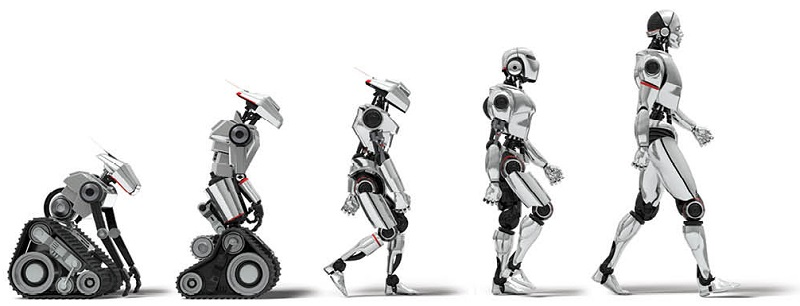
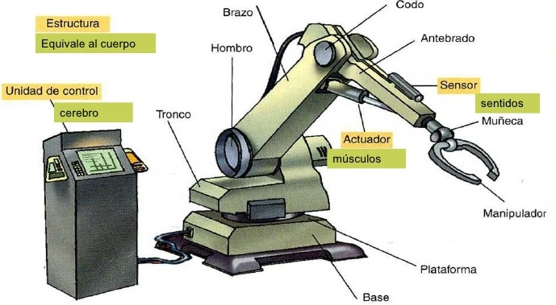
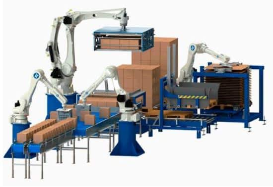
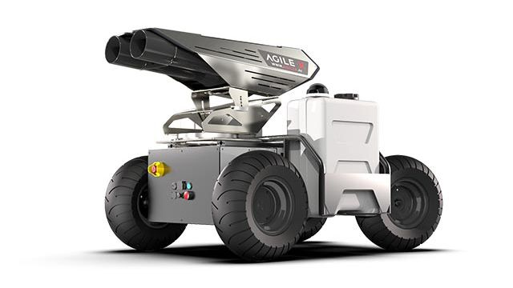
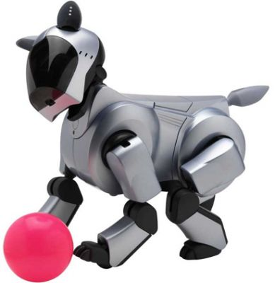
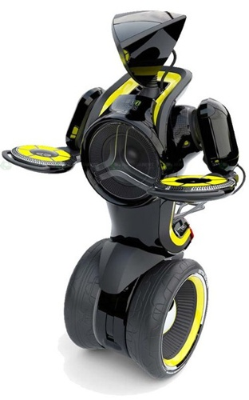

La robótica es una ciencia que une varias ramas tecnológicas o disciplinas, con el objetivo de diseñar maquinas robotizadas que sean capaces de realizar tareas automatizadas o de simular el comportamiento humano o animal, pudiendo algunos hacerlo por su cuenta y otros requieren de una persona que les indique previamente qué hacer en función de la capacidad de su software.
La existencia de la robótica supone un gran avance científico y tecnológico en diversas áreas de la mecánica, control, electrónica y computación; pero además ayudará a resolver problemas sociales de salud y seguridad y creará una nueva industria con importantes beneficios económicos.
Existen diversos tipos de robot, entre ellos encontramos:
-Robots de manipulación o de primera generación: tienen al factor mecánico como el más prioritario. Cuentan con sistemas mecánicos multifuncionales con un sistema de control simple y manual, de secuencia fija o variable. Se caracterizan por priorizar los desafíos del entorno completando su tareas. Su finalidad es repetir tareas programadas, como ir de un lado a otro, mover objetos.
-Robots de aprendizaje o de segunda generación: repiten una secuencia de movimientos que ha sido previamente ejecutada por un operador humano, para ello usan un dispositivo mecánico, efectuando el operador los movimientos y acciones que se requieren y el robot los sigue, analiza y memoriza para luego replicar. Cuentan con un sistema de retroalimentación con el que obtienen más información sobre su entorno y la guardan en sistemas de almacenamiento, junto con sus instrucciones. Tienen capacidad para ejecutar movimientos más complejos.
-Robots con control sensorizado o de tercera generación: ejecutan órdenes a partir de un programa y las envían al manipulador para que este efectúe los movimientos necesarios. El uso de los sensores permite a los robots contar con cierto conocimiento del entorno o ambiente que los rodea. Así comienza la era de los robots inteligentes y a surgir los lenguajes de programación que permiten desarrollar sus sistemas de control, los cuales utilizan una estrategia de ciclo cerrado.
-Robots inteligentes o de cuarta generación: utilizan sensores más desarrollados, que les permite controlar procesos y captar información sobre su entorno en tiempo real, contando con mejores habilidades y procesos de conducta. Aprenden directamente del entorno que los rodea.
-Robots 5G o de quinta generación: son aquellos en los que se está trabajando actualmente, representando así los últimos avances en robótica.

-Robots poliarticulados: posición estática, estructura ideada para mover únicamente sus elementos terminales, en un espacio de trabajo limitado.

-Robots de empaquetado automático: suelen aplicarse cuando es necesario abarcar una zona de trabajo muy amplia o alargada, actuar sobre objetos con un plano simétrico vertical o bien reducir el espacio que se utiliza en el suelo, así como en la automatización del trabajo, ya que aumentan notablemente la productividad.

-Robots móviles: máquinas automáticas con una alta capacidad de desplazamiento, pudiendo trasladarse y desenvolverse en diversos entornos. Para poder moverse, utilizan pistas materializadas a través de radiación electromagnética de circuitos que son empotrados al suelo y bandas detectadas fotoeléctricamente. Algunos modelos incluso pueden superar múltiples obstáculos e incluso pueden estar dotados de un nivel elevado de inteligencia.

-Robots androides y ginoides: robots antropomorfos o con forma humana, que buscan reproducir el comportamiento del ser humano.
-Robots zoomórficos: su estructura imita a los animales, y por lo tanto buscan imitar las habilidades motoras de las diferentes especies.

-Robots híbridos: comparten características de varios de los tipos anteriores.
